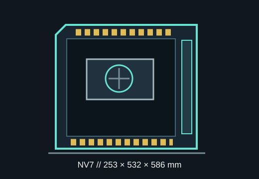

[ MODEL IDENTIFICATION // PHANTEKS NV7 ]
Phanteks NV7
A full-tower showcase chassis measuring 253 × 532 × 586 mm, with 450 mm GPU length, 185 mm CPU-cooler height and broad multi-radiator support.

MODEL BOUNDARY: This entry is the original NV7, not the later NV7 MKII or D-RGB accessory kit. Match the SKU on the case to the applicable manual.
Dimensions & fit specifications
| External dimensions | 253 × 532 × 586 mm (W × D × H); Phanteks classifies the NV7 as a full tower. |
|---|---|
| Motherboards | E-ATX up to 277 mm wide with the LED cover; ATX, microATX and Mini-ITX. |
| GPU / CPU cooler / PSU | GPU length up to 450 mm; card width up to 255 mm in the published fit; CPU cooler height 185 mm; PSU length 255 mm. |
| Radiators | Top, side and bottom positions support up to 360 mm radiators; no front radiator position. Side assembly allowance is 440 × 132 × 65 mm. Radiator-plus-fan combinations are constrained by the manual's placement diagram. |
| Storage | Six 2.5-inch bays plus one 3.5-inch HDD position, with two further 3.5-inch bays that can each take two 2.5-inch SSDs, per Phanteks' bay chart. |
| Expansion | Eight horizontal slots; three-slot vertical GPU support is provided, but riser cable is sold separately. |
Compatibility & preservation
Phanteks advertises simultaneous multi-radiator configurations; use the exact NV7 radiator matrix and the measured radiator-plus-fan stack rather than adding each position's maximum independently. E-ATX support is limited to 277 mm board width with the LED cover; check board edge connectors and cable access.
- Keep airflow covers, glass, GPU support bracket and the required case screws together.
- Use an actual card's length and width: the 450 mm length limit alone does not ensure clearance for a wide connector or vertical installation.
- Record SKU PH-NV723TG_DBK01 where present to separate this NV7 from revised models.
Manufacturer sources
- Phanteks — NV7 product specificationsCurrent official specification table for chassis size, component clearances, bays and cooling.
- Phanteks — NV7 manual, revision 1.1 (PDF)Manufacturer installation and radiator-layout reference.